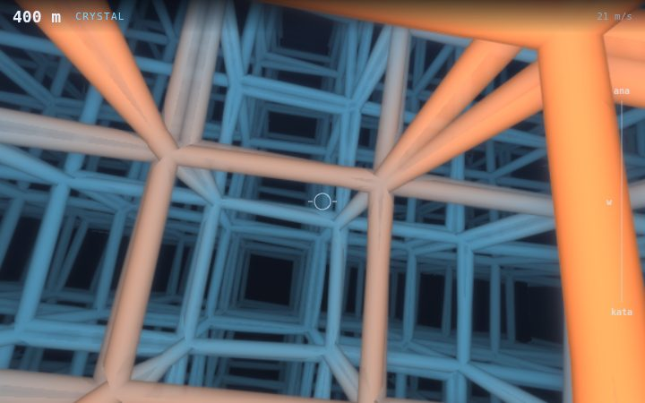
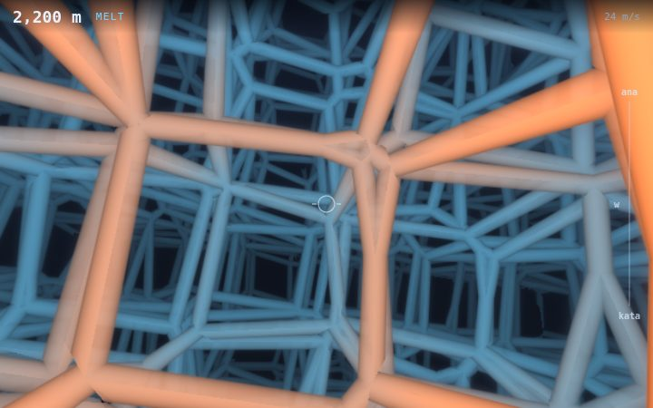
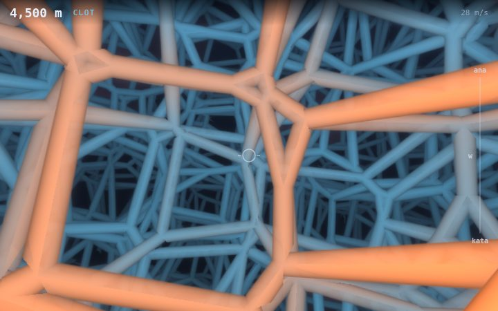
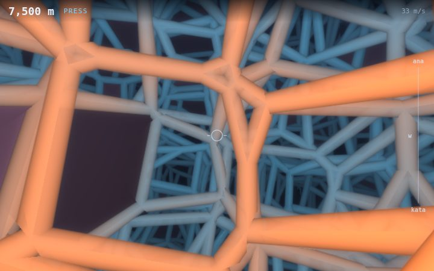
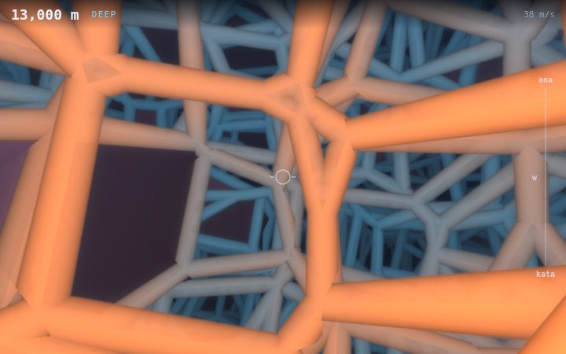

games.mino.mobi · PLATEAU · field notes
THE FOAM
How the four-dimensional foam you fly through changes as you go, and why w feels so different at the start.
You're flying through a Voronoi foam in four dimensions: space is shared out between seeds, one to a cell of a 4D grid, each point belonging to the seed nearest it. You see the 3D slice of it you're in. Where three cells meet in that slice there's an edge (a Plateau border, in real foam), and those are what you mustn't touch, with the walls of the solid cells. Distance is what you score: a cell of the foam is 10 m.
The foam changes with distance, in phases. Nothing jumps: every number below ramps smoothly into the next. The pictures are the same spot in one foam, the same seed and heading, at five distances: what you're looking at is the foam itself changing round a fixed place.
Five phases

Crystal
0 m – 1.2 km
A nearly perfect tesseract foam: every seed sits within 4% of a cell of the centre of its grid cell, so the slice you see is a lattice of near-cubes, stretched and sheared by how your slice is tilted in 4D. It's the easiest place to fly and the strangest place to move through w (see below).
- jitter 0.08
- solid 0%
- speed 20–22 m/s

Melt
1.2 km – 3.2 km
The crystal melts. Every seed drifts from its grid point, up to half a cell by 3 km, and the cubes go irregular: faces split, new small faces open, and the lanes you could see straight down close up. By 3 km it is a fully random foam, and it stays one.
- jitter 0.08 → 0.5
- solid 0%
- speed 22–26 m/s

Clot
3.2 km – 5.6 km
Cells start turning solid: opaque, and as deadly as an edge. Each cell has its own threshold, so once a cell has turned it stays solid, and more turn as you go, up to one in seventeen by 5.6 km. The cell you're in is never solid: a cell can only turn solid ahead of you. A solid cell that touches yours only at a corner counts too, so watch the corners.
- jitter 0.5
- solid 0 → 6%
- speed 26–30 m/s

Press
5.6 km – 9 km
The cells press smaller, to three quarters of their size by 9 km, but you and the edges don't shrink with them. So the gaps between edges are narrower for the same craft, and the struts look fatter: that's the same tube in a smaller room. More cells clot as well.
- cell size 1 → 0.75
- solid 6 → 10%
- speed 30–36 m/s

Deep
9 km on
As far as the foam goes. It stops changing at 10 km (11% solid), and only the speed still climbs, to 42 m/s by 20 km. From here it's you against the same foam, faster and faster.
- solid 10 → 11%
- speed 36 → 42 m/s
| distance | phase | jitter | solid | cell size | speed |
|---|---|---|---|---|---|
| 0 | crystal | 0.08 | 0% | 1.00 | 20 m/s |
| 1.2 km | melt begins | 0.08 | 0% | 1.00 | 22 m/s |
| 3.0 km | fully melted | 0.50 | 0% | 1.00 | 25 m/s |
| 3.2 km | clot begins | 0.50 | 0% | 1.00 | 26 m/s |
| 5.6 km | press begins | 0.50 | 6.0% | 1.00 | 30 m/s |
| 9 km | deep | 0.50 | 9.9% | 0.75 | 36 m/s |
| 10 km | the foam stops changing | 0.50 | 11% | 0.75 | 37 m/s |
| 20 km | top speed | 0.50 | 11% | 0.75 | 42 m/s |
Jitter is how far a seed may sit from the centre of its grid cell, as a share of a cell; at half a cell the foam is fully random. Solid is the share of cells that are solid.
Why w feels so jumpy at the start
Move through w and the slice you see moves through the foam: cells shrink away, new ones are born, faces flip. On average the foam changes just as fast in every phase: per fiftieth of a cell of w, about 2–2.6% of what you see changes cell. What differs is when.
In the crystal, nothing happens, and nothing, and then a third of the view flips at once: once a cell of w, half-way between one layer of the 4D lattice and the next. You've crossed into the next layer, and every cell in sight crosses with you. Deep in the random foam the same amount of change comes in small, steady pieces. That's why early w feels hair-trigger and later w feels calmer, even though the foam is changing as much.
Crystal (0 m)
the share of the view (within 3 cells of you) that changes cell, at each step of 0.02 cells through w
Random foam (4.5 km)
the same measure, on the same scale
the numbers
| crystal | random foam | |
|---|---|---|
| mean change per step | 2.1% | 2.6% |
| worst single step | 33% | 8% |
| share of all change in the busiest 10 steps | 90% | 27% |
| steps that change under 1% | 87 of 100 | 22 of 100 |
500 points of the slice within 3 cells of you, one foam (seed 4242), stepped 2 cells through w in steps of 0.02. A step counts a point as changed when it belongs to a different cell after the step.
Your controls and w
Every turn you make turns you through the fourth dimension too, by half as much: that's the coupling. But only one of the three turns points you into w:
| a quarter-second tap of | tilts your slice | tips your nose into w | so 2 s later you've moved through w |
|---|---|---|---|
| roll | 5.4° | 0.094 | 0.47 cells |
| pitch | 12.2° | 0 | 0 |
| yaw | 12.2° | 0 | 0 |
Roll turns your nose toward w (as it turns your wings round it), so flying forward then carries you through the fourth dimension: it's the throttle for w. Pitch and yaw tip your wings or your up into w instead: your slice tilts, and the foam you see shears, but you don't travel through w. The w gauge on the right shows where your nose points: ana up, kata down.
Roll used to turn faster than the other two and all at once on a key or button, so a tap threw the nose three times further into w. It now turns at the same rate as pitch and yaw and eases in over 0.3 s, so a tap is a nudge.
What ends runs
A lookahead autopilot that tests 27 stick inputs half a second ahead, ten times a second, gets from 5.6 to 5.9 km: every run ends early in the press, as often on a solid cell as on an edge. That's where the gaps narrow for the same craft and about one cell in sixteen is solid. A human sees further ahead than half a second and turns less perfectly.
fly PLATEAU · how it works · Foam⁴, the toy for looking at the same foam · the arcade